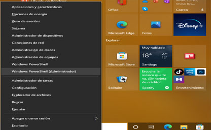
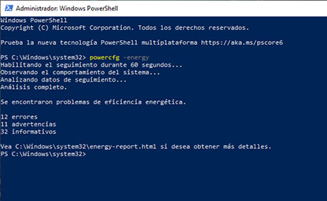
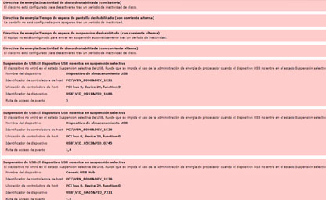
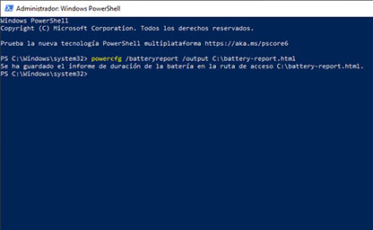
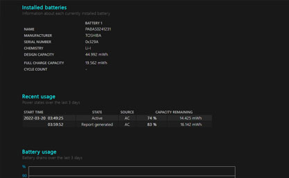

Verificar el estado de la Bateria

Saber el estado de la batería de tu portátil Windows
Seguro que si tienes un ordenador portátil te has preguntado cuánta vida útil le queda a la batería. Evidentemente siempre podrás tenerlo conectado a la corriente, pero perderá parte del encanto. Por suerte, es muy fácil saber el estado de la batería de tu portátil Windows y lo puedes hacer en menos de un minuto. En este caso vamos a averiguar cuántos ciclos de carga le quedan a tu portátil Windows 10, pero lo mejor de todo es que este comando te servirá también para saberlo en versiones anteriores del sistema operativo.
Pasos Para un Informe
- Lo primero que debes hacer es pulsar Windows + X.
- En la pestaña emergente haz clic en Windows PowerShell (Administrador).
- En la ventana de comandos escribe lo siguiente:
powercfg -energyy pulsa Enter. - Esperar los 60 segundo aprox, al mostrar las lista de errores si tenemos 4 errores en el estado de la bateri es mala hay que cambiarla ya que su funcionamento no es el adecuado
- Tambien podemos tener un informe de los resultados en
C:\Windows\system32\energy-report.html
Guia de imagenes



Pasos Para un Informe
- Lo primero que debes hacer es pulsar Windows + X.
- En la pestaña emergente haz clic en Windows PowerShell (Administrador).
- En la ventana de comandos escribe lo siguiente:
powercfg /batteryreport /output C:\battery-report.htmly pulsa Enter. - Ahora abre el Explorador de archivos y entra en la carpeta raíz C para encontrarte el informe
Una vez hecho esto ya sabrás cómo saber el estado de la batería de tu portátil Windows y así comprobar si tiene algún problema o cuántos ciclos de carga le quedan a tu ordenador.
Guia de imagenes


×